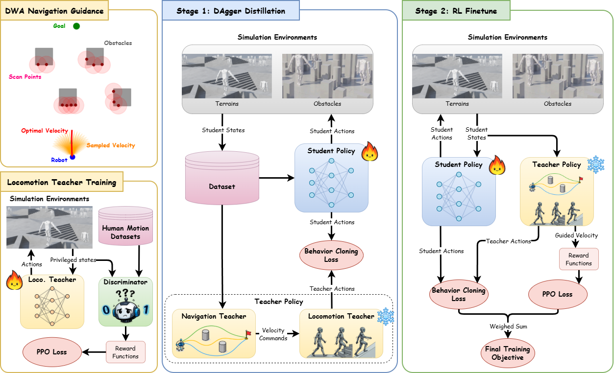

GuideWalk: Learning Unified Autonomous Navigation and Locomotion for Humanoid Robots across Versatile Terrains
Abstract
Humanoid robots have achieved strong locomotion capabilities, but reliable navigation on versatile terrains remains challenging because obstacle avoidance must be coordinated with dynamically feasible motion. In this work, we present GuideWalk, a unified end-to-end framework that integrates traversability-aware navigation guidance with terrain-adaptive locomotion teacher for humanoid navigation. Specifically, we introduce a navigation module that provides explicit velocity guidance, decoupling obstacle avoidance from terrain conditions to enable robust planning across diverse environments. We propose a composite teacher distillation scheme, where goal-directed commands and dynamically consistent actions are aggregated and distilled into a single policy. To further improve robustness, the distilled policy is refined with reinforcement learning and an auxiliary behavior cloning objective, which promotes exploration while preserving desirable teacher behaviors. Experiments demonstrate that GuideWalk achieves stable and effective navigation while maintaining stable humanoid locomotion.
Overview

Overview of GuideWalk Left: a composite teacher consisting of a DWA-based navigation module and a pre-trained locomotion policy. Middle: Stage 1, where the student policy is trained via DAgger-based imitation from the composite teacher. Right: Stage 2, where reinforcement learning with an auxiliary imitation objective further refines the policy.
Simulation Experiments
Stairs
Slope
Beam
Obstacle Avoidance
Real World Experiments
Flat Ground
Static Obstacle
Dynamic Obstacle